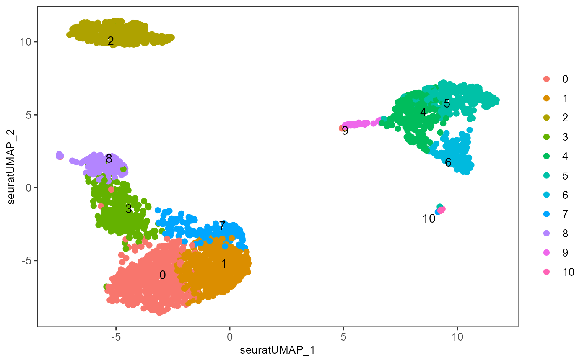
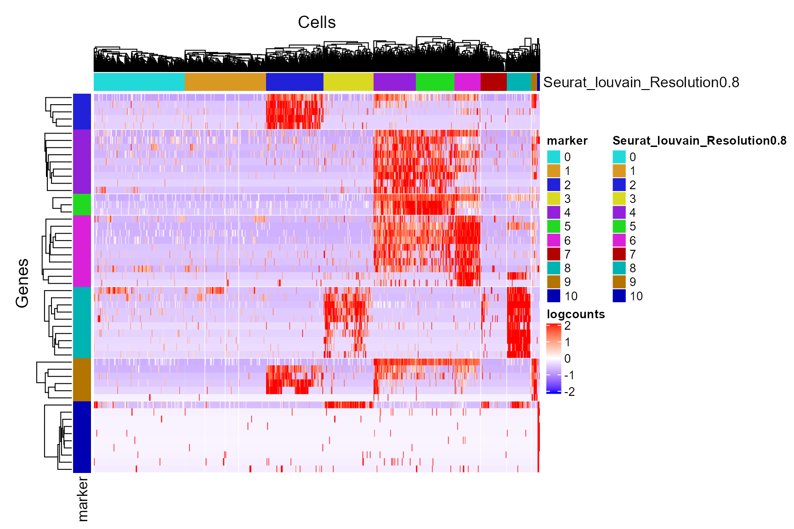

vignettes/find_marker.Rmd
find_marker.RmdThis section comes together with the previous section Differential Expression. The basic strategy singleCellTK (SCTK) uses to find biomarkers is to iteratively identify the significantly up-regulated features of each group of cells against all the other cells. This means, the function we have (findMarkerDiffExp()) is a wrapper of functions that do differential expression (DE) analysis, which would be called in a loop. For the detail of the functions we have for DE analysis, please refer to runDEAnalysis() and the documentation linked to above.
The methods we have for marker detection are listed below. Note that “ANOVA” approach, previously listed for DE, lacks the ability to produce a fold change metric, so we are unable to tell the up-regulation and select markers with this approach.
| Method | Citation |
|---|---|
| MAST | Greg Finak and et al., 2015 |
| Limma | Gordon Smyth and et al., 2004 |
| DESeq2 | Michael Love and et al., 2014 |
As per SCTK’s strategy, the primary input is limited to an SingleCellExperiment (SCE) object, which has been through preprocessing steps with cluster labels annotated. While the iteration is a fixed pattern, the parameters needed are rather simple:
sce <- findMarkerDiffExp(inSCE = sce, useAssay = "logcounts", method = "MAST", cluster = "cluster", covariates = NULL, log2fcThreshold = 0.25, fdrThreshold = 0.05)
Here all arguments execpt the input SCE object (inSCE) are set by default. method can only be chosen from the table above. cluster and covariates should be given a single string which is present in names(colData(inSCE)). cluster is required for grouping cells, while covariates is optional for DE detection. log2fcThreshold and fdrThreshold are numeric and has to be set in plausible range. log2fcThrshold has to be positive and fdrThreshold has to be greater than zero and less than one.
The returned SCE object will contain the updated information of the markers identified in its metadata slot.
To demonstrate a simple and clear example, here we use the “PBMC-3k” dataset from “10X” which can be easily imported with SCTK functions. The preprocessing only includes necessary steps to get cluster labels (i.e. QC and filtering are excluded).
library(singleCellTK) pbmc3k <- importExampleData("pbmc3k") pbmc3k <- scater_logNormCounts(pbmc3k, "logcounts") # Go through the Seurat curated workflow to get basic clusters pbmc3k <- seuratNormalizeData(inSCE = pbmc3k, useAssay = "counts") pbmc3k <- seuratFindHVG(inSCE = pbmc3k, useAssay = "seuratNormData") pbmc3k <- seuratScaleData(inSCE = pbmc3k, useAssay = "seuratNormData") pbmc3k <- seuratPCA(inSCE = pbmc3k, useAssay = "seuratScaledData") pbmc3k <- seuratRunUMAP(pbmc3k) pbmc3k <- seuratFindClusters(inSCE = pbmc3k, useAssay = "seuratScaledData") # Optional visualization plotSCEDimReduceColData(inSCE = pbmc3k, colorBy = "Seurat_louvain_Resolution0.8", conditionClass = "factor", reducedDimName = "seuratUMAP")

Then we call findMarkerDiffExp() on the clustered data, with the cluster annotation just attached, which by default named with "Seurat_louvain_Resolution0.8".
pbmc3k <- findMarkerDiffExp(inSCE = pbmc3k, method = "Limma", # Runs fastest useAssay = "counts", # Recommanded for Limma, "logcounts" for the others cluster = "Seurat_louvain_Resolution0.8")
After this, the marker genes, together with their statistics, of each cluster will be concatenated in one table. This table can be extracted with:
markerTable <- metadata(pbmc3k)$findMarker head(markerTable)
| Gene | Log2_FC | Pvalue | FDR | Seurat_louvain_Resolution0.8 | |
|---|---|---|---|---|---|
| 1 | LTB | 1.3795012 | 0 | 0 | 0 |
| 2 | IL32 | 1.1497180 | 0 | 0 | 0 |
| 3 | LDHB | 0.9442271 | 0 | 0 | 0 |
| 4 | CD3D | 0.8880507 | 0 | 0 | 0 |
| 5 | IL7R | 0.7243084 | 0 | 0 | 0 |
| 9 | CD3E | 0.6925999 | 0 | 0 | 0 |
Similarly to the Differential Expression section, we also provide a automated and organized heatmap plotting for the markers:
plotMarkerDiffExp(pbmc3k)

Note that when plotting the heatmap, the genes that are identified as up-regulated in multiple clusters will be considered only for the one cluster with the highest fold-change, while all of them are still kept in the table in metadata.